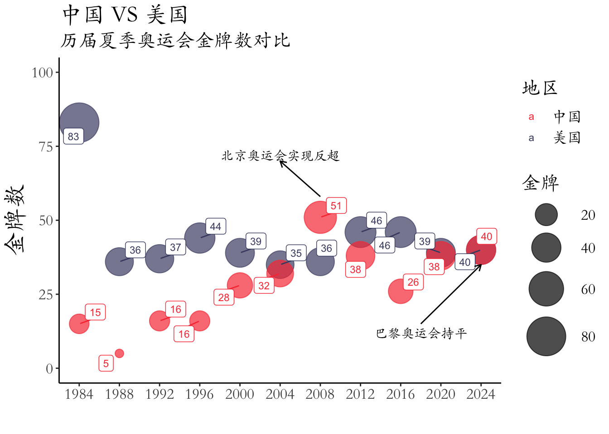

Code
library(ggplot2) #绘图
library(dplyr) #数据分析
library(RColorBrewer) #调用调色板
library(ggrepel)library(ggplot2) #绘图
library(dplyr) #数据分析
library(RColorBrewer) #调用调色板
library(ggrepel)library(ggplot2)
mytheme <- theme(
text = element_text(size = 16,
family = "STKaiti"),
axis.title = element_text(size = 20)
)load("../Output/summer_Olympics.RData")中国 vs 美国历届奥运金牌数对比
country_list <- c("中国","美国")
summer1 <- summer %>% filter(地区 %in% country_list)p1 <- summer1 %>% ggplot(aes(x=年份,y=金牌,size = 金牌,color=地区))+
geom_point(alpha=0.7)+
scale_size(range = c(3,15))+
coord_cartesian(ylim = c(0,100),xlim = c(1980,2028))+
scale_color_manual(values = c("#F93F43","#4A4C72"))+
scale_x_continuous(breaks=unique(summer$年份))p1+
geom_label_repel(aes(label=金牌),size=3)+
annotate("text",2004,72,label="北京奥运会实现反超",family="STKaiti")+
annotate("segment",x=2008,xend = 2004,y=58,yend = 70,arrow=arrow(length = unit(.2,"cm")))+
annotate("text",2018,12,label="巴黎奥运会持平",family="STKaiti")+
annotate("segment",x=2018,xend = 2024,y=15,yend = 35,arrow=arrow(length = unit(.2,"cm")))+
labs(x="",y="金牌数",
title = "中国 VS 美国",
subtitle = "历届夏季奥运会金牌数对比")+
theme_classic()+
mytheme
p2 <- summer1 %>% ggplot(aes(x=年份,y=金牌,size = 金牌,color=地区))+
geom_point(alpha=0.7)